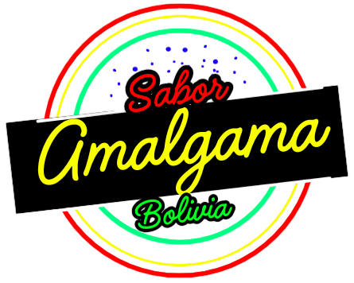

Occidente de Bolivia
La Paz
- Una diversidad increíble: En Bolivia, y especialmente en La Paz, existe una diversidad de papas que sorprende. Se han catalogado más de 1000 variedades, cada una con características únicas en cuanto a sabor, color, forma y tamaño. ¡Es como tener un arcoíris de papas! Un alimento ancestral: La papa es un alimento fundamental en la dieta boliviana desde tiempos prehispánicos. Los pueblos andinos la cultivaban y consumían de diversas formas, y su importancia se mantiene hasta nuestros días. Más que un alimento: La papa va más allá de ser un simple tubérculo. En Bolivia, es un símbolo de identidad cultural. Se utiliza en innumerables platos tradicionales y es protagonista de festividades y rituales.
- Adaptación a diferentes climas: Las papas bolivianas son famosas por su capacidad de adaptarse a diferentes altitudes y climas. Desde las altas montañas hasta los valles, encontramos variedades que se desarrollan en condiciones extremas. Un cultivo ancestral con futuro: A pesar de ser un cultivo ancestral, la papa boliviana sigue siendo objeto de investigación y desarrollo. Se buscan nuevas variedades más resistentes a plagas y enfermedades, así como técnicas de cultivo más sostenibles.
- La papa en la gastronomía: La papa es el ingrediente principal de muchos platos típicos bolivianos, como el sajta, el picante de pollo, y el chuño. La papa y la cultura: La papa está presente en la música, la literatura y el arte boliviano. Es un símbolo de riqueza y abundancia.
Canción emblemática de La Paz
Canción emblemática de Oruro
Oruro
- Origen ancestral: El charque, que es carne deshidratada, es una técnica de conservación de alimentos ancestral en los Andes. Los pueblos originarios la utilizaban para preservar la carne de llama, alpaca y otros animales durante la época seca. Proceso de elaboración artesanal: La elaboración del charque es un proceso artesanal que requiere tiempo y paciencia. La carne se corta en tiras, se sala y se deshidrata al sol o en hornos especiales. Este proceso concentra los sabores y nutrientes de la carne.
- Un plato minero: Se cree que el charquekán nació en las comunidades de los urus y se popularizó entre los mineros de Oruro. Estos trabajadores, después de una jornada agotadora, encontraban en el charquekán una comida reconfortante y nutritiva. Ingredientes clave: Además del charque, el charquekán tradicional lleva papa, mote de maíz, queso fresco, huevo cocido y llajua (una salsa picante a base de locoto).
- Sabor intenso: La combinación de sabores del charque, la papa, el mote y la llajua crea una explosión de sabor en la boca. Texturas contrastantes: La textura crujiente del charque, la suavidad de la papa y la cremosidad del queso fresco hacen de este plato una experiencia única.
Potosí
- La harina de trigo: Es uno de los ingredientes más utilizados en la cocina boliviana. Se emplea para espesar salsas, preparar empanadas y otros platos. El trigo en la cultura: El pan, hecho a base de trigo, es un alimento fundamental en la mesa de los bolivianos y tiene un gran valor simbólico.
- Panadería: El trigo es la base de una gran variedad de panes, desde el pan de sal hasta el pan de batalla. Pastelería: Se utiliza en la elaboración de pasteles, galletas, tortas y otros productos de repostería. Otros usos: El trigo también se utiliza para hacer fideos, sémola y otros productos derivados.
- Esfuerzos por la soberanía alimentaria: En los últimos años, se han realizado esfuerzos para aumentar la producción nacional de trigo y reducir la dependencia de las importaciones. Variedades adaptadas: Los agricultores bolivianos han desarrollado variedades de trigo adaptadas a las condiciones climáticas y de suelo del país.
Canción emblemática de Potosí